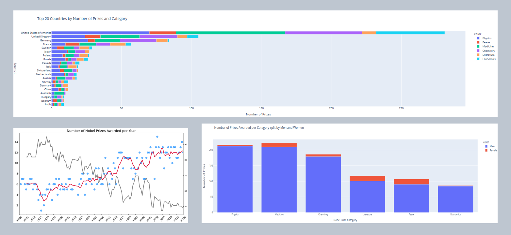

Nobel Prizes

This Google Colaboratory script analyzes Nobel Prize data using Python libraries such as Pandas, NumPy, Plotly Express, Seaborn, and Matplotlib. The script begins by importing necessary libraries and loading Nobel Prize data from a CSV file. It then proceeds to clean and preprocess the data, performing operations like sorting, splitting string values, and calculating percentages.
The analysis covers various aspects of the Nobel Prize data, including the distribution of genders among laureates, identifying laureates who have won multiple prizes, exploring the distribution of prizes across different categories, examining the number of prizes awarded per category split by gender, and visualizing the trends in the number of Nobel Prizes awarded over the years.
Additionally, it delves into the geographical distribution of Nobel Prize winners, particularly focusing on the top 20 countries with the most laureates. It also investigates the distribution of prizes across different categories for these top countries.
In summary, this Google Colaboratory script provides a comprehensive exploration of Nobel Prize data, offering insights into trends, distributions, and patterns across various dimensions.